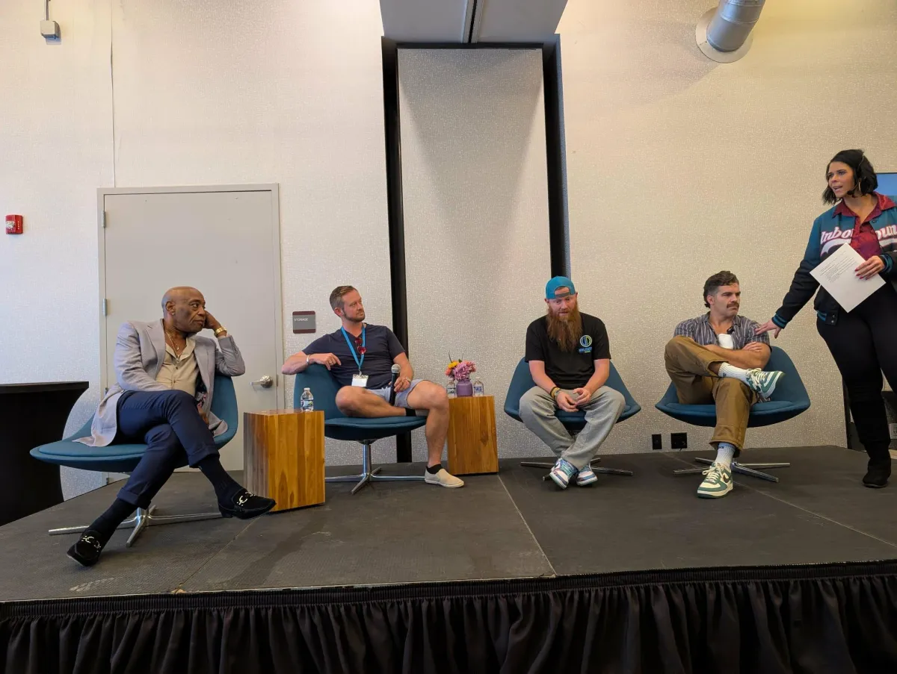
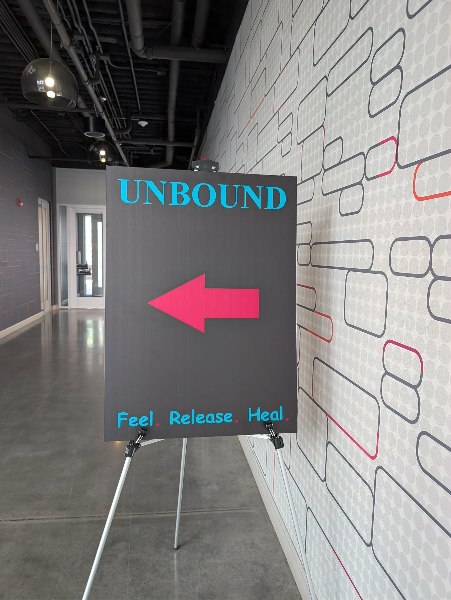
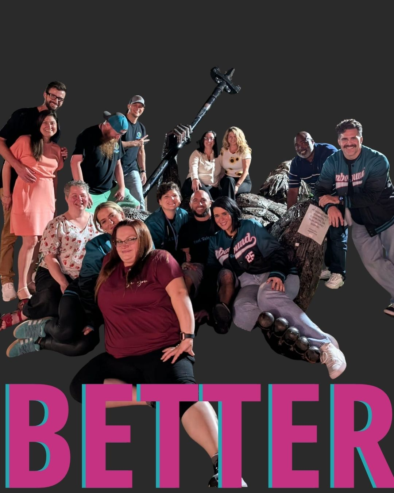

Survivors
People ready to step out of pain, reclaim self and purpose, and discover what freedom can look like now.
Feel · Release · Heal
Unbound brings people together for immersive healing experiences, faith-rooted connection, honest conversation, and the courage to reclaim all they were created for.
 RALEIGH, NC
RALEIGH, NCThe flagship gathering
After the impact of Unbound 2025, the movement returns in 2026 with a deeper transformational experience. This is not an event where healing is only discussed—it is something you are invited to experience.
Who this movement is for
People ready to step out of pain, reclaim self and purpose, and discover what freedom can look like now.
Women and men seeking deeper wholeness, renewed faith, and a more authentic relationship with their own healing.
Coaches, facilitators, community builders, and helpers who are also willing to honor their own journey.
Unbound — The Collective
A sacred online space for healing, connection, accountability, and integration before, during, and after Unbound events.
Know that you are not alone in your healing and connect with people who understand the courage it takes.
Three 60-minute group sessions on the first, second, and third Mondays of each month.
Sessions close with a grounding meditation to help integrate what has been learned and opened.
Group chat, encouragement, accountability, stories of hope, and tools for nervous-system restoration.
Pre-event circles that help participants arrive intentional, supported, and ready for the experience.
Post-event support to sustain momentum and keep the fire alive after the weekend ends.
Collective membership
Bigger
Steady support to anchor your healing journey.
Better
A personalized jump-start followed by the monthly community rhythm.
Bolder
High-touch guidance and private support every month.



A movement of healing, faith, and freedom